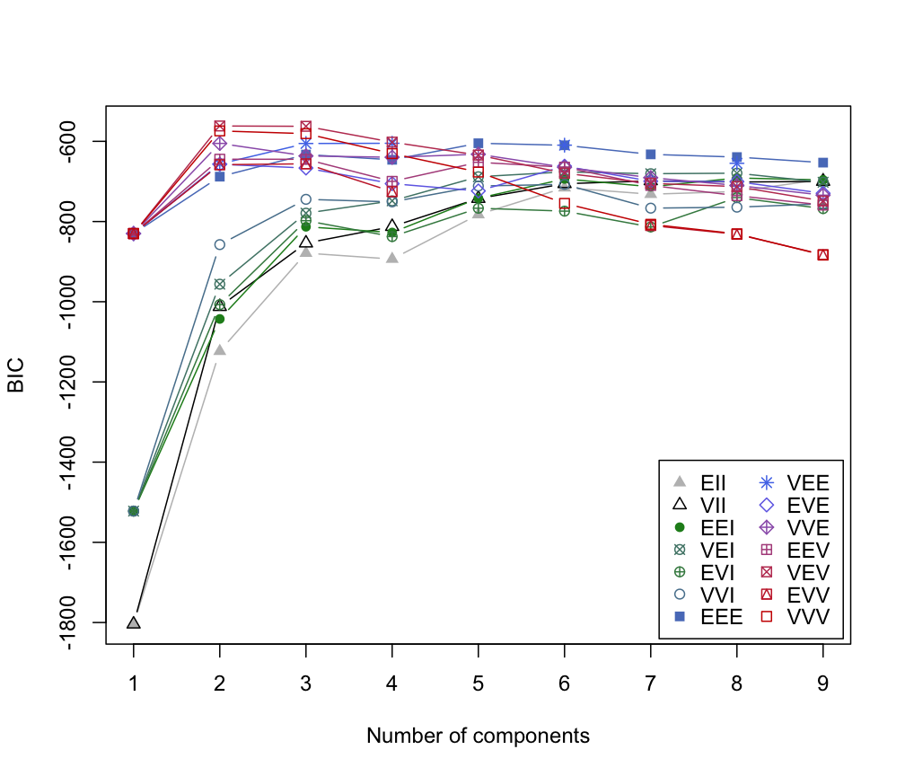
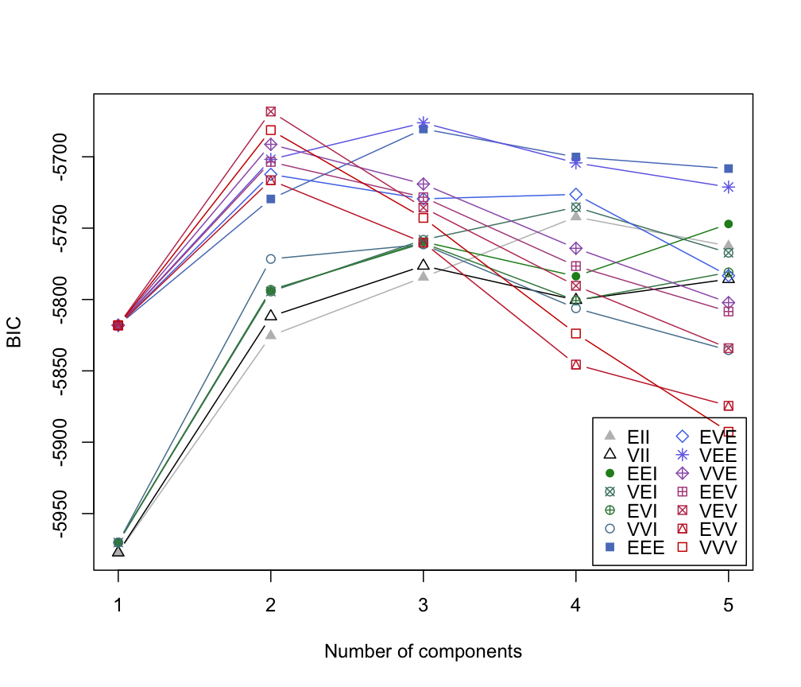

mclustBIC.RdBIC for parameterized Gaussian mixture models fitted by EM algorithm initialized by model-based hierarchical clustering.
mclustBIC(data, G = NULL, modelNames = NULL,
prior = NULL, control = emControl(),
initialization = list(hcPairs = NULL,
subset = NULL,
noise = NULL),
Vinv = NULL, warn = mclust.options("warn"),
x = NULL, verbose = interactive(),
…)
| data | A numeric vector, matrix, or data frame of observations. Categorical variables are not allowed. If a matrix or data frame, rows correspond to observations and columns correspond to variables. |
|---|---|
| G | An integer vector specifying the numbers of mixture components
(clusters) for which the BIC is to be calculated.
The default is |
| modelNames | A vector of character strings indicating the models to be fitted
in the EM phase of clustering. The help file for
unless the argument |
| prior | The default assumes no prior, but this argument allows specification of a
conjugate prior on the means and variances through the function
|
| control | A list of control parameters for EM. The defaults are set by the call
|
| initialization | A list containing zero or more of the following components:
|
| Vinv | An estimate of the reciprocal hypervolume of the data region.
The default is determined by applying function |
| warn | A logical value indicating whether or not certain warnings
(usually related to singularity) should be issued when
estimation fails.
The default is controlled by |
| x | An object of class |
| verbose | A logical controlling if a text progress bar is displayed during the
fitting procedure. By default is |
| … | Catches unused arguments in indirect or list calls via |
Return an object of class 'mclustBIC' containing the Bayesian Information
Criterion for the specified mixture models numbers of clusters.
Auxiliary information returned as attributes.
The corresponding print method shows the matrix of values and the top models according to the BIC criterion.
Scrucca L., Fop M., Murphy T. B. and Raftery A. E. (2016) mclust 5: clustering, classification and density estimation using Gaussian finite mixture models, The R Journal, 8/1, pp. 205-233.
Fraley C. and Raftery A. E. (2002) Model-based clustering, discriminant analysis and density estimation, Journal of the American Statistical Association, 97/458, pp. 611-631.
Fraley C., Raftery A. E., Murphy T. B. and Scrucca L. (2012) mclust Version 4 for R: Normal Mixture Modeling for Model-Based Clustering, Classification, and Density Estimation. Technical Report No. 597, Department of Statistics, University of Washington.
priorControl,
emControl,
mclustModel,
summary.mclustBIC,
hc,
me,
mclustModelNames,
mclust.options
irisBIC <- mclustBIC(iris[,-5]) irisBIC#> Bayesian Information Criterion (BIC): #> EII VII EEI VEI EVI VVI EEE #> 1 -1804.0854 -1804.0854 -1522.1202 -1522.1202 -1522.1202 -1522.1202 -829.9782 #> 2 -1123.4117 -1012.2352 -1042.9679 -956.2823 -1007.3082 -857.5515 -688.0972 #> 3 -878.7650 -853.8144 -813.0504 -779.1566 -797.8342 -744.6382 -632.9647 #> 4 -893.6140 -812.6048 -827.4036 -748.4529 -837.5452 -751.0198 -646.0258 #> 5 -782.6441 -742.6083 -741.9185 -688.3463 -766.8158 -711.4502 -604.8131 #> 6 -715.7136 -705.7811 -693.7908 -676.1697 -774.0673 -707.2901 -609.8543 #> 7 -731.8821 -698.5413 -713.1823 -680.7377 -813.5220 -766.6500 -632.4947 #> 8 -725.0805 -701.4806 -691.4133 -679.4640 -740.4068 -764.1969 -639.2640 #> 9 -694.5205 -700.0276 -696.2607 -702.0143 -767.8044 -755.8290 -653.0878 #> EVE VEE VVE EEV VEV EVV VVV #> 1 -829.9782 -829.9782 -829.9782 -829.9782 -829.9782 -829.9782 -829.9782 #> 2 -657.2263 -656.3270 -605.1841 -644.5997 -561.7285 -658.3306 -574.0178 #> 3 -666.5491 -605.3982 -636.4259 -644.7810 -562.5522 -656.0359 -580.8396 #> 4 -705.5435 -604.8371 -639.7078 -699.8684 -602.0104 -725.2925 -630.6000 #> 5 -723.7199 NA -632.2056 -652.2959 -634.2890 NA -676.6061 #> 6 -661.9497 -609.5584 -664.8224 -664.4537 -679.5116 NA -754.7938 #> 7 -699.5102 NA -690.6108 -709.9530 -704.7699 -809.8276 -806.9277 #> 8 -700.4277 -654.8237 -709.9392 -735.4463 -712.8788 -831.7520 -830.6373 #> 9 -729.6651 NA -734.2997 -758.9348 -748.8237 -882.4391 -883.6931 #> #> Top 3 models based on the BIC criterion: #> VEV,2 VEV,3 VVV,2 #> -561.7285 -562.5522 -574.0178plot(irisBIC)# NOT RUN { subset <- sample(1:nrow(iris), 100) irisBIC <- mclustBIC(iris[,-5], initialization=list(subset = subset)) irisBIC plot(irisBIC) irisBIC1 <- mclustBIC(iris[,-5], G=seq(from=1,to=9,by=2), modelNames=c("EII", "EEI", "EEE")) irisBIC1 plot(irisBIC1) irisBIC2 <- mclustBIC(iris[,-5], G=seq(from=2,to=8,by=2), modelNames=c("VII", "VVI", "VVV"), x= irisBIC1) irisBIC2 plot(irisBIC2) # }nNoise <- 450 set.seed(0) poissonNoise <- apply(apply( iris[,-5], 2, range), 2, function(x, n) runif(n, min = x[1]-.1, max = x[2]+.1), n = nNoise) set.seed(0) noiseInit <- sample(c(TRUE,FALSE),size=nrow(iris)+nNoise,replace=TRUE, prob=c(3,1)) irisNdata <- rbind(iris[,-5], poissonNoise) irisNbic <- mclustBIC(data = irisNdata, G = 1:5, initialization = list(noise = noiseInit)) irisNbic#> Bayesian Information Criterion (BIC): #> EII VII EEI VEI EVI VVI EEE #> 1 -5977.328 -5977.328 -5970.295 -5970.295 -5970.295 -5970.295 -5818.060 #> 2 -5825.418 -5811.834 -5793.901 -5794.428 -5793.223 -5771.583 -5729.552 #> 3 -5784.436 -5776.384 -5759.590 -5758.183 -5760.461 -5761.447 -5680.523 #> 4 -5742.152 -5800.378 -5783.724 -5735.333 -5800.756 -5806.164 -5700.137 #> 5 -5762.520 -5785.749 -5747.083 -5767.262 -5781.001 -5835.520 -5708.260 #> EVE VEE VVE EEV VEV EVV VVV #> 1 -5818.031 -5818.060 -5818.031 -5818.060 -5818.060 -5818.060 -5818.060 #> 2 -5712.321 -5701.834 -5691.272 -5703.614 -5668.290 -5716.434 -5681.315 #> 3 -5729.474 -5676.189 -5719.089 -5728.321 -5735.599 -5760.094 -5742.833 #> 4 -5726.343 -5704.279 -5764.130 -5776.571 -5790.380 -5845.565 -5823.840 #> 5 -5783.338 -5721.212 -5802.206 -5808.419 -5834.126 -5874.462 -5892.635 #> #> Top 3 models based on the BIC criterion: #> VEV,2 VEE,3 EEE,3 #> -5668.290 -5676.189 -5680.523plot(irisNbic)